自 Vaswani 等（2017）提出 Transformer 模型以来，一个基本问题仍未得到回答：模型如何在推理时对长于训练期间所见序列的输入实现外推？我们首先表明，仅通过改变位置表示方法就可以实现外推，但我们发现当前方法无法实现高效外推。因此，我们引入一种更简单、更高效的位置方法：带线性偏置的注意力（Attention with Linear Biases，ALiBi）。ALiBi 不将位置嵌入加到词嵌入上；相反，它用与距离成正比的惩罚对查询—键注意力分数进行偏置。我们表明，该方法在长度为 1024 的输入序列上训练一个 13 亿参数模型，并外推到长度为 2048 的输入序列时，可达到与在长度 2048 输入上训练的正弦位置嵌入模型相同的困惑度，但训练速度快 11%、内存使用少 11%。ALiBi 对近因的归纳偏置还使其在 WikiText-103 基准上优于多种强位置方法。1
在构建基于 Transformer 的语言模型时，一个主要设计决策是训练序列长度，本文记为 \(L\)，迄今为止它等同于推理序列长度。更大的 \(L\) 可获得更多上下文，从而改善推理时的预测。但更长序列的训练成本更高。2
在 Transformer 之前，RNN 语言模型在较短 \(L\) 序列上训练，并假设能在推理时泛化到更长上下文（Mikolov et al., 2010; Mikolov & Zweig, 2012; Zaremba et al., 2014）。Vaswani 等（2017）在提出 Transformer 时推测，它“可能 […] 外推到比训练中遇到的序列更长的序列长度”。我们将外推定义为：当验证时输入词元数量超过模型训练所用词元数量后，模型仍能继续表现良好的能力。我们发现，使用正弦位置嵌入的 Transformer 语言模型（LM）外推能力非常弱；见图 1。
我们证明这种外推失败是由位置嵌入方法造成的。如图 1 所示，近期对原始正弦位置方法的替代方案（Su et al., 2021; Raffel et al., 2020）改善了外推。然而，其中较好的 T5 bias 比正弦方法慢得多，并使用额外内存和参数（图 2）。
因此，我们引入带线性偏置的注意力（ALiBi）以促进高效外推。ALiBi 用与相关键和查询之间距离成正比的线性递减惩罚对注意力分数进行负偏置。我们的简单方法消除了位置嵌入。
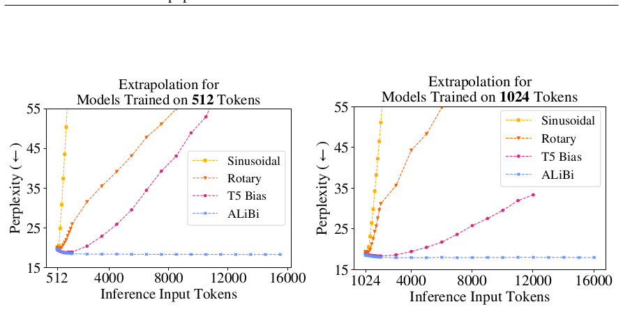
与在相同输入长度上训练的正弦模型相比，我们的方法不需要额外运行时间或参数，仅带来可忽略的（0–0.7%）内存增加。ALiBi 只需修改现有 Transformer 代码的几行即可实现。
使用 ALiBi，Transformer LM 可以在短 \(L\) 序列上训练，因此成本低得多，同时仍可在运行时可靠地应用于长序列。例如，一个使用 ALiBi、在 \(L=1024\) 词元上训练的 13 亿参数 LM，与在 \(L=2048\) 上训练的正弦模型在 2048 词元序列上测试时达到相同困惑度，尽管我们的模型快 11%、内存少 11%。
尽管性能在约两倍训练词元数时达到峰值，ALiBi 即使在长度为 10,000 的序列上也能保持强性能。在最近探索的设置中，NLP 训练示例作为上下文提供给 LM（Brown et al., 2020），我们的方法将允许接触更多示例。此外，它还能生成更长输出。
我们首次表明，正弦位置方法虽然在技术上应能外推，但实践中外推能力非常有限。旋转位置方法虽优于正弦方法，但仍未取得满意结果。在其他条件不变时，我们首次观察到 T5 bias 方法比二者带来更好外推，因此我们得出结论：外推能力高度依赖位置嵌入。不幸的是，T5 bias 计算成本高（图 2）。
Transformer LM 接收词元列表并输出下一词元预测的概率分布。我们将输入列表称为当前输入子序列，因为 LM 输入通常是（更长）训练或评估序列的子序列。训练和困惑度评估（即给固定序列打分）期间，许多预测可一次计算；这通过“因果掩码”完成，确保每个位置的预测只受其左侧词元影响。令 \(L\) 为训练期间每个输入子序列长度；它包含 \(L\) 个预测，平均可访问 \(\frac{L+1}{2}\) 个（左侧）上下文词元。为探索模型外推能力，我们关注评估时考虑长度 \(L_{valid}>L\) 序列的情况。当推理和训练中 \(L\) 不同时，我们用 \(L\) 指训练子序列长度，用 \(L_{valid}\) 指验证时长度。
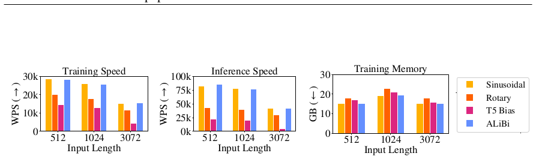
非重叠推理：为在长于 \(L\) 的序列上训练或评估，通常将序列切分为 \(L\) 长度子序列并独立训练或评估。除另有说明外，我们使用非重叠推理报告困惑度分数。
推理期间外推：形式上，定义 Transformer 层的函数与输入长度无关；它们将任意、未固定数量的输入向量映射到相同数量输出向量。当 Transformer 应用于本质上是序列的数据（如文本）时，位置信息以多种方式注入输入。
Vaswani 等（2017）讨论了两种将位置嵌入到向量并加到词嵌入上的选项：为特定位置学习嵌入，以及未学习的正弦嵌入。他们观察到二者性能相似，但偏好正弦方法，认为它可能在推理时外推到更长输入序列。我们发现该模型无法外推到超过 \(L\) 几十个词元以上。
实验设置：我们首先在 WikiText-103 语料（Merity et al., 2016）上使用 Baevski & Auli（2018）的 Transformer 语言模型测试各种位置方法的外推能力。使用该模型是因为它在近期语言建模发展中的重要角色（Khandelwal et al., 2020; Press et al., 2021）。训练集约 1.03 亿词元，来自英文维基百科（半 GB）。模型有 16 层 Transformer，维度 1024，8 个头，前馈内维 4096。该模型绑定词嵌入和 softmax 矩阵（Press & Wolf, 2017; Inan et al., 2017）。实验中，除改变位置方法和训练子序列长度外，不修改其他超参数，包括随机种子和训练 epoch 数（205）。
正弦位置嵌入：正弦位置嵌入（Vaswani et al., 2017; §3.5）是常数、非学习向量，在输入 Transformer 第一层时加到词元嵌入上。它们常用于 Transformer 语言建模（Baevski & Auli, 2018; Lewis et al., 2021）和机器翻译（Vaswani et al., 2017; Ott et al., 2018）模型。我们首先考虑 Baevski & Auli（2018）未修改模型，使用正弦位置嵌入，在 \(L=512\) 词元上训练；然后在验证集上用 \(L+k\) 词元推理，\(k\) 从 0 到 15,000。图 1（左）和附录表 2 显示，模型在 \(k=20\) 前改善困惑度，之后从 \(k=20\) 到 \(k=50\) 停止改善并保持稳定，然后开始退化。使用 \(L=1024\) 词元训练的模型也得到类似结果（图 1 右和附录表 3）。该模型在 \(L_{valid}=L+50\) 前改善，之后性能下降。
旋转位置嵌入：旋转方法由 Su 等（2021）提出，最近因开源 GPT-3（Brown et al., 2020）实现 GPT-J（Wang & Komatsuzaki, 2021）而流行。它不在 Transformer 底部添加正弦嵌入，而是将每个注意力层的键和查询乘以正弦嵌入。
与正弦或学习位置嵌入方法不同，旋转方法在每一层（而非仅初始层）向模型注入位置信息。此外，它不向自注意力子层的值添加位置信息。自注意力子层输出是输入值向量的线性变换加权和；因此，不将位置信息插入值中，每个 Transformer 层输出不含显式位置信息。我们怀疑这种位置信息隔离可能有利于外推，并在设计我们的方法（第 3 节）时从中获得灵感。
我们将旋转位置嵌入方法应用于 Baevski & Auli 基线。困惑度结果（图 1 和附录表 2、3）优于正弦方法：\(L=512\)（\(L=1024\)）的模型在比训练所见多 \(k=200\)（\(k=100\)）词元前改善困惑度，但代价是训练和推理更慢（图 2）。
T5 bias：虽然大多数模型使用训练或正弦位置嵌入，Raffel 等（2020）的 T5 模型使用相对位置方法（Shaw et al., 2018; Huang et al., 2019），不向词嵌入添加位置信息（如上一方法）。相反，它修改注意力值计算方式。我们称之为“T5 bias”方法。在未修改 Transformer 中计算注意力值，我们计算每个查询与每个相关键的点积，然后 softmax 这些注意力值。在此方法中，我们如前计算注意力值，然后为每个查询—键分数添加一个学习的共享偏置，该偏置仅依赖查询和键之间距离。因此，查询和键距离为零（即查询和键代表同一词元）的所有分数获得特定学习偏置，查询和键相隔一个词的所有分数获得不同学习偏置，依此类推，直到某一点，从那里多个不同距离共享同一学习偏置（这可能有利于外推）。与旋转方法一样，T5 bias 在每一层注入位置信息，并且不将显式位置信息整合到自注意力值向量中。
Raffel 等（2020）提出 T5 bias 可能允许外推，但未报告测试实验。这里我们表明 T5 bias 确实允许语言模型外推。我们再次修改 Baevski & Auli 模型，这次插入 T5 bias。7
如图 1 所示，T5 bias 在比训练更长序列上改善困惑度，即 \(L=512\)（\(L=1024\)）模型多 \(k=600\)（\(k=800\)）词元。不幸的是，这一令人印象深刻的性能有代价：训练至少比正弦模型慢两倍。因此，该模型的外推能力没有效率优势。例如，对 1024 词元推理，我们可以训练 \(L=1024\) 正弦模型，或训练 \(L=512\) T5 bias 模型并外推到 1024。然而，\(L=1024\) 正弦模型运行 28.5k 词/秒（WPS），而 \(L=512\) T5 bias 模型运行 14.4k WPS（附录表 1），因此用该方法在短序列上训练没有加速。8
在 Vaswani 等（2017）的 Transformer 中，位置嵌入在网络底部加到词嵌入上。对于长度 \(L\) 的输入子序列，注意力子层计算每个头中第 \(i\) 个查询 \(\mathbf{q}_i\in\mathbb{R}^{1\times d}\)（\(1\le i\le L\)）相对于前 \(i\) 个键 \(\mathbf{K}\in\mathbb{R}^{i\times d}\) 的注意力分数，其中 \(d\) 是头维度：
然后这些注意力分数乘以值，返回注意力子层输出。
使用 ALiBi 时，我们不在网络任何位置添加位置嵌入。唯一修改是在查询—键点积之后添加一个静态、非学习偏置：
其中标量 \(m\) 是训练前固定的头特定斜率。图 3 给出可视化。
对于 8 头模型，我们使用的斜率是几何序列：\(\frac{1}{2^1},\frac{1}{2^2},\dots,\frac{1}{2^8}\)。对于需要 16 头的模型，我们通过几何平均每对连续斜率来插值这 8 个斜率，得到从 \(\frac{1}{\sqrt{2}}\) 开始、比率为 \(\frac{1}{\sqrt{2}}\) 的几何序列：\(\frac{1}{2^{1.5}},\frac{1}{2^{1.5}},\dots,\frac{1}{2^{8}}\)。一般来说，对于 \(n\) 个头，我们的斜率集合是从 \(2^{-\frac{8}{n}}\) 开始、以相同值为比率的几何序列。
在第 4 节中，我们观察到这组斜率在广泛文本领域和模型大小上有效。因此，我们认为不必每次在新数据集上训练新模型时都调优这些斜率。这使我们的方法类似于正弦方法，其超参数（波长几何级数起点和终点）由 Vaswani 等（2017）一次性设定，然后在不同数据集、不同大小模型中复用。
ALiBi 具有对近因的归纳偏置；它惩罚距离较远的查询—键对之间的注意力分数，惩罚随键和查询距离增加而增大。不同头以不同速率增加惩罚，取决于斜率大小。
我们最初实验使斜率可训练，但没有产生强外推结果。对约十组斜率进行简短手动探索后，我们发现了最终选择的斜率集。主要洞见是：最有效的斜率集是在 \((0,1)\) 范围内、越接近 0 密度越高的斜率。我们还发现方法对斜率选择稳健。甚至从指数分布随机采样在某些情况下也有效（尽管方差高）。
由于 ALiBi 是相对位置方法，我们在每一层将位置信息加到键和查询，但不加到值，如 T5 bias 和旋转方法。我们假设这些性质可能有利于外推。
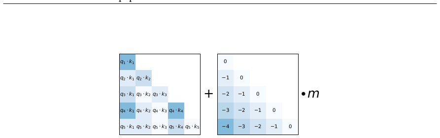
实现：ALiBi 易于实现，所有修改只需几行代码。我们通过修改掩码矩阵，将线性偏置加进去（实践中，训练 Transformer LM 时，查询 \(\mathbf{q}_i\) 只关注键 1 到 \(i\)；这通过在 softmax 前将掩码矩阵加到查询—键点积实现）。这意味着使用我们的方法没有运行时惩罚，因为不向网络添加操作。
与在相同输入长度上训练的正弦模型相比，ALiBi 会带来内存增加（在某些实验中最多 100MB）：未修改 Transformer 中掩码大小为 \(L\times L\)；使用 ALiBi 时，掩码稍大为 \(n\times L\times L\)（\(n\) 为头数），因为每个头添加的线性偏置使用不同斜率。但如我们所示，ALiBi 能在小得多的序列上训练，同时达到（偶尔超过）在更长序列上使用正弦嵌入获得的结果，从而节省数 GB 内存。
我们首先表明，在 WikiText-103 上 ALiBi 高效，并且能够训练短输入子序列模型，即使 ALiBi 模型外推到训练词元数六倍以上，也优于强基线。然后，我们采用在 WikiText-103 上有效的相同超参数（斜率集），表明无需修改即可在非常不同领域（书籍）上提供强结果。最后，我们表明在更大（461 GB）数据集和更多计算上训练的 13 亿参数 ALiBi 模型优于正弦方法，因为它在更快、使用更少内存（训练更短输入）的同时达到相似困惑度。
虽然 Vaswani 等（2017）位置方法的多种替代方案已被提出，但很少有被大型（10 亿或更多参数）LM 采用，因为该设置比小规模实验更具挑战性。GPT-3 和 Jurassic-1（Lieber et al., 2021）使用 Vaswani 等的学习位置嵌入方法，GPT-J 使用旋转方法。我们在 13 亿参数模型上的结果表明，我们的方法能够在不重新调优超参数的情况下泛化到更大模型、数据集大小和训练时长。
我们首先在 WikiText-103 语料（Merity et al., 2016）上开发方法，将 Baevski & Auli（2018）语言模型中的正弦位置嵌入替换为 ALiBi。
图 4（及附录表 5）显示在不同输入子序列词元数 \(L\) 训练、在验证集上外推到更长子序列长度的结果。第一观察是，不外推时，对于每个 \(L\)，我们的模型都优于正弦方法，有时显著。例如，Baevski & Auli 模型在 \(L=3072\) 输入词元训练时达到 \(18.67\pm0.24\)（标准差）困惑度，而我们的 \(L=3072\) 模型达到 17.60（二者均在 \(L_{valid}=3072\) 评估）。
第二观察是，我们所有模型都能外推，并在处理比训练更多词元时获得更好困惑度。例如，在 512 词元上训练的模型（在长度 512 开发集子序列上达到 19.73 困惑度）在外推到长度 3072 子序列时达到 18.40。令人惊讶的是，这以统计显著幅度超过 \(L=3072\) 正弦模型在开发集上的分数。注意，我们所有 \(L=512\) 到 \(L=2048\) 的模型在外推到 \(L_{valid}=3072\) 时都优于 \(L=3072\) 正弦基线，尽管这些模型训练时间少得多（附录图 8 比较训练速度与困惑度）。\(L=512\) 模型训练快 1.84 倍，却在外推到 \(L_{valid}=3072\) 时仍优于 \(L=3072\) 正弦模型。此外，训练 \(L=3072\) 正弦模型需要超过 16GB 内存的 GPU 以容纳大注意力矩阵，而我们 \(L=512\) 模型可在内存小得多的 GPU 上训练，且优于它。
附录表 5 还显示，对于 \(L=1024\) 和 3072，我们的方法即使 \(L_{valid}=L\)（即不外推）也优于旋转和 T5 bias 模型。图 1（及附录表 2、3）更广泛比较我们的方法与其他位置方法。它们显示 T5 bias（基线中最好）在 \(L_{valid}\) 约 2L 前改善困惑度，但在 WikiText-103 上我们的方法至少改善到约 3L，\(L=512\) 模型甚至在 \(L_{valid}\) 超过 12k 词元时仍改善困惑度。即使无法在更长序列上改善困惑度，ALiBi 在添加更多词元时也始终保持强性能。
附录表 6 显示验证集结果也迁移到 WikiText-103 测试集。目前几乎所有在 WikiText-103 上报告结果的模型都使用滑动窗口评估（§B 定义）计算困惑度。我们在附录表 7 中将该方法应用于我们的模型（以及正弦、旋转和 T5 bias 模型）。我们发现 \(L=3072\) 模型超过 Transformer-XL（Dai et al., 2019）、Sandwich（Press et al., 2020）和 Shortformer（Press et al., 2021）。结果与分阶段训练（Press et al., 2021）相似，但低于 Routing Transformer（Roy et al., 2020）和 kNN-LM（Khandelwal et al., 2020）。这些模型的方法与我们的正交，我们假设将其与我们的方法结合可能带来更大性能提升。
在 WikiText-103 上开发方法后，我们在附录 A.3 中使用类似模型架构在另一领域（书籍）上运行一组实验，不修改任何 ALiBi 超参数（斜率），表明结果完全迁移到新领域。我们的模型在不外推时超过正弦基线，在外推到更长序列时也优于它。
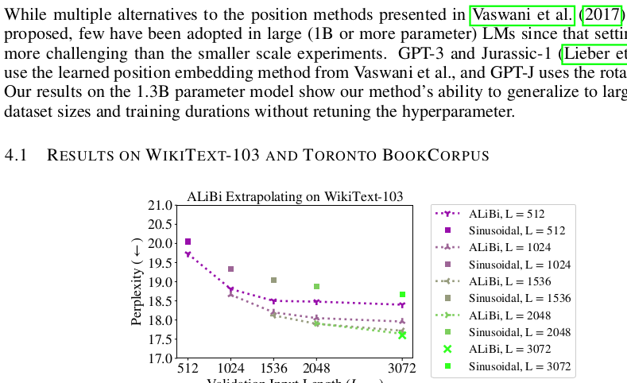
最后一组实验研究 ALiBi 是否能迁移到在更大数据集、更大计算预算下训练的更大模型。我们表明该方法在更具挑战性设置中取得强结果，在显著减少内存的同时获得与正弦基线相似性能，因为我们训练更短子序列。
所选数据集是用于训练 RoBERTa（Liu et al., 2019）BERT 实现（Devlin et al., 2019）的数据集与 Conneau 等（2020）引入的 CC-100 语料英文部分的组合，总计 461 GB。RoBERTa 训练语料（即 Toronto Book Corpus（Zhu et al., 2015）、英文维基百科、CC-News（Nagel, 2016）、OpenWebText（Gokaslan & Cohen, 2019）和 Stories（Trinh & Le, 2018））为 161 GB，CC-100 英文部分为 300 GB。验证集包含 649K 词元。
该数据集模型有 25 层 Transformer、16 头、维度 2048，前馈子层隐藏维度 8192。模型有 13 亿参数。我们训练一个 epoch，即在 128 块 V100 GPU 上 50k 次更新。
图 5（左）比较在 \(L_{valid}=1024\) 上，ALiBi 模型（\(L=512\) 训练）与正弦模型（\(L=1024\) 训练）整个训练过程的验证困惑度。由于我们的模型在更短序列上训练，它快 7% 且少用 1.6 GB 内存。当我们的模型训练结束时停止正弦基线训练。此时，我们的模型仅比基线差 0.06 困惑度，尽管训练序列长度是基线一半且需要更少内存。
图 5（右）结果更令人印象深刻：我们的 \(L=1024\) 模型在 \(L_{valid}=2048\) 评估时比 \(L=2048\) 正弦模型好 0.09 困惑度，尽管少用 3.1 GB 内存。我们的模型在整个训练过程中保持对正弦模型的困惑度领先。通过在训练过程中均匀采样五个点，我们计算得出 \(L=1024\) 模型平均快 11% 达到给定困惑度。
由于这些比较中的模型使用少得多内存，它们允许堆叠更多层，从而进一步改善性能（运行时成本可忽略）。但为保持实验简单，我们不加层。
附录表 12 提供额外结果，比较我们的模型与正弦基线在相同 \(L\) 上训练，表明 ALiBi 在不外推时与正弦基线相似。这与较小数据集结果形成对比：在那些数据集中，即使不外推 ALiBi 也始终优于其他位置方法，表明 ALiBi 的归纳偏置为低资源语言建模提供额外好处。
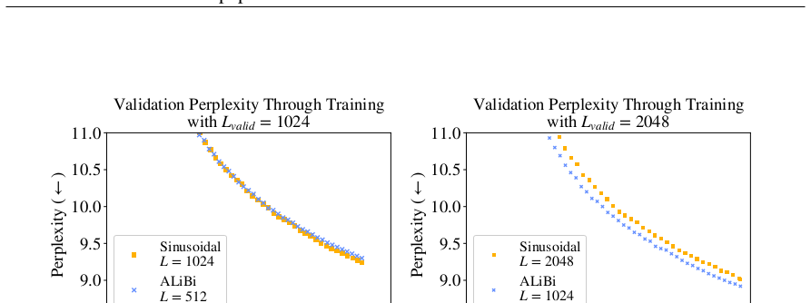
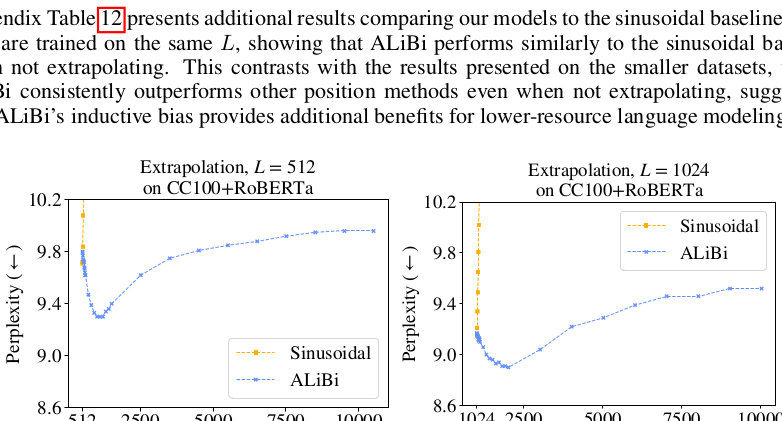
图 6 显示，我们 \(L=512\) 和 \(L=1024\) 训练的模型在外推到约两倍训练词元时取得最佳结果。具体地，\(L=512\) 模型（\(L_{valid}=512\) 时困惑度 9.79）在外推到 1012 词元时取得最佳分数（9.3）；\(L=1024\) 模型（\(L_{valid}=1024\) 时困惑度 9.16）在外推到 2024 词元时取得最佳分数（8.9）。
一种可能解释是：模型训练期间观察到的子序列最长为 \(L\) 词元。在长度 \(2L\) 子序列上推理时，模型消耗的一半子序列与训练示例一样长。当推理在长度 \(2L+1\) 或更长子序列上进行时，模型所做的预测中少于一半是在训练所见长度子序列上，这可能降低性能。
正弦模型在此设置中完全无法外推，\(L=512\) 和 1024 模型在评估时只要增加一个超过 \(L\) 的词元，性能就退化。
在附录 B 中，我们发现 ALiBi 相对正弦嵌入的优势在很大程度上可由其更好地避免早期词元诅咒来解释。我们假设未来基于 ALiBi 的工作可能通过更有效利用更长历史获得进一步收益。
与我们的工作并行，Wennberg & Henter（2021）引入一种相对位置方法，与我们的方法一样，向注意力分数添加键和查询元素距离的函数偏置。与我们的 ALiBi 使用非学习线性函数不同，他们使用径向基函数，含多个可训练参数（在我们的实验中，这导致运行时略降）。此外，他们展示文本分类实验，而非语言建模。他们未探索外推。Distance Aware Transformer（Wu et al., 2021）将注意力分数乘以键和查询距离的函数偏置。该函数在每个头使用不同学习参数。他们仅展示文本分类结果。在我们的实验（未展示）中，将注意力分数乘以偏置（而非 ALiBi 的相加）会降低性能。
Transformer-XL（Dai et al., 2019）提出一种语言模型，使用缓存并能在推理时关注比训练更多词元（通过增加缓存长度）。然而，该工作只展示输出长度受限于 \(L\)（训练长度）的结果，且其相对位置方法非常慢（Press et al., 2021）。Longformer（Beltagy et al., 2020）将短序列训练模型适配到文档级任务，但需在更长序列上部分训练。我们的 ALiBi 方法无需额外长序列训练即可外推。
据我们所知，外推此前未在 Transformer 语言建模中探索，但在其他任务上与 Transformer 先前或同期被研究，如机器翻译（Rosendahl et al., 2019; Neishi & Yoshinaga, 2019; Newman et al., 2020; Kiyono et al., 2021）、人工数据集训练的序列到序列模型（Hupkes et al., 2020）、算术任务预训练序列到序列模型（Nogueira et al., 2021, 附录 C）、强化学习训练模型（Lampinen et al., 2021）、图像、语音识别和机器翻译模型（Likhomanenko et al., 2021）以及蛋白质结构预测（Jumper et al., 2021, 附录 1.5）。
我们表明正弦位置嵌入方法不能使 Transformer 外推到比训练更长输入。然后我们确立仅改变位置方法即可实现 Transformer 外推。我们表明 ALiBi 方法为现有位置方法提供极简单替代，并允许模型外推。此外，在不外推时，我们的方法取得比正弦方法更好困惑度（在小于 10 亿参数、训练数据较少的模型中）或相似困惑度（在训练数据多得多的十亿参数模型中）。ALiBi 实现简单，不降低运行速度或需要额外参数（但偶尔需要可忽略额外内存）。使用我们的方法，我们加速了与 GPT-3 相同输入序列长度（2048）评估的 13 亿参数模型训练。
我们感谢 Tim Dettmers、Gabriel Ilharco、Jungo Kasai、Hao Peng、Sewon Min、Sofia Serrano、Sam Shleifer、Luke Zettlemoyer、Julian Michael、Nikolaos Pappas、Yizhong Wang 和匿名审稿人的宝贵反馈和有益讨论。
Alexei Baevski and Michael Auli. Adaptive input representations for neural language modeling. CoRR, abs/1809.10853, 2018.
Iz Beltagy, Matthew E. Peters, and Arman Cohan. Longformer: The long-document transformer. arXiv:2004.05150, 2020.
Tom B. Brown, Benjamin Mann, Nick Ryder, Melanie Subbiah, Jared Kaplan, Prafulla Dhariwal, Arvind Neelakantan, Pranav Shyam, Girish Sastry, Amanda Askell, et al. Language models are few-shot learners, 2020.
Alexis Conneau, Kartikay Khandelwal, Naman Goyal, Vishrav Chaudhary, Guillaume Wenzek, Francisco Guzman, Edouard Grave, Myle Ott, Luke Zettlemoyer, and Veselin Stoyanov. Unsupervised cross-lingual representation learning at scale. Proceedings of the 58th Annual Meeting of the Association for Computational Linguistics, 2020.
Zihang Dai, Zhilin Yang, Yiming Yang, Jaime Carbonell, Quoc Le, and Ruslan Salakhutdinov. Transformer-XL: Attentive language models beyond a fixed-length context. In Proceedings of the 57th Annual Meeting of the Association for Computational Linguistics, pp. 2978–2988, Florence, Italy, July 2019.
Jacob Devlin, Ming-Wei Chang, Kenton Lee, and Kristina Toutanova. BERT: Pre-training of deep bidirectional transformers for language understanding. In Proceedings of the 2019 Conference of the North American Chapter of the Association for Computational Linguistics: Human Language Technologies, Volume 1 (Long and Short Papers), pp. 4171–4186, Minneapolis, Minnesota, June 2019.
Aaron Gokaslan and Vanya Cohen. Openwebtext corpus. http://skylion007.github.io/OpenWebTextCorpus, 2019.
Cheng-Zhi Anna Huang, Ashish Vaswani, Jakob Uszkoreit, Ian Simon, Curtis Hawthorne, Noam M. Shazeer, Andrew M. Dai, M. Hoffman, M. Dinculescu, and D. Eck. Music transformer: Generating music with long-term structure. In ICLR, 2019.
Dieuwke Hupkes, Verna Dankers, Mathijs Mul, and Elia Bruni. Compositionality decomposed: How do neural networks generalise? Journal of Artificial Intelligence Research, 67:757–795, April 2020.
Hakan Inan, Khashayar Khosravi, and Richard Socher. Tying word vectors and word classifiers: A loss framework for language modeling. In ICLR, 2017.
J. Jumper, Richard Evans, A. Pritzel, Tim Green, Michael Figurnov, O. Ronneberger, et al. Highly accurate protein structure prediction with alphafold. Nature, 596:583–589, 2021.
Urvashi Khandelwal, Omer Levy, Dan Jurafsky, Luke Zettlemoyer, and Mike Lewis. Generalization through Memorization: Nearest Neighbor Language Models. In International Conference on Learning Representations (ICLR), 2020.
Shun Kiyono, Sosuke Kobayashi, Jun Suzuki, and Kentaro Inui. Shape: Shifted absolute position embedding for transformers. ArXiv, abs/2109.05644, 2021.
Andrew Kyle Lampinen, Stephanie C. Y. Chan, Andrea Banino, and Felix Hill. Towards mental time travel: a hierarchical memory for reinforcement learning agents. CoRR, abs/2105.14039, 2021.
Mike Lewis, Shruti Bhosale, Tim Dettmers, Naman Goyal, and Luke Zettlemoyer. Base layers: Simplifying training of large, sparse models, 2021.
Opher Lieber, Or Sharir, Barak Lenz, and Yoav Shoham. Jurassic-1: Technical details and evaluation. Technical report, AI21 Labs, August 2021.
Tatiana Likhomanenko, Qiantong Xu, Ronan Collobert, Gabriel Synnaeve, and Alex Rogozhnikov. CAPE: encoding relative positions with continuous augmented positional embeddings. CoRR, abs/2106.03143, 2021.
Yinhan Liu, Myle Ott, Naman Goyal, Jingfei Du, Mandar Joshi, Danqi Chen, Omer Levy, Mike Lewis, Luke Zettlemoyer, and Veselin Stoyanov. Roberta: A robustly optimized bert pretraining approach, 2019.
Stephen Merity, Caiming Xiong, James Bradbury, and Richard Socher. Pointer sentinel mixture models, 2016.
Tomas Mikolov and G. Zweig. Context dependent recurrent neural network language model. 2012 IEEE Spoken Language Technology Workshop (SLT), pp. 234–239, 2012.
Tomas Mikolov, M. Karafiat, L. Burget, J. Cernocky, and S. Khudanpur. Recurrent neural network based language model. In INTERSPEECH, 2010.
Sebastian Nagel. Cc-news. https://commoncrawl.org/2016/10/news-dataset-available/, 2016.
Masato Neishi and Naoki Yoshinaga. On the relation between position information and sentence length in neural machine translation. In Proceedings of the 23rd Conference on Computational Natural Language Learning (CoNLL), pp. 328–338, Hong Kong, China, November 2019.
Benjamin Newman, John Hewitt, Percy Liang, and Christopher D. Manning. The eos decision and length extrapolation. In BlackBoxNLP@EMNLP, 2020.
Rodrigo Nogueira, Zhiying Jiang, and Jimmy J. Li. Investigating the limitations of the transformers with simple arithmetic tasks. ArXiv, abs/2102.13019, 2021.
Myle Ott, Sergey Edunov, David Grangier, and Michael Auli. Scaling neural machine translation. In Proceedings of the Third Conference on Machine Translation (WMT), 2018.
Ofir Press and Lior Wolf. Using the output embedding to improve language models. In Proceedings of the 15th Conference of the European Chapter of the Association for Computational Linguistics: Volume 2, Short Papers, pp. 157–163, Valencia, Spain, April 2017.
Ofir Press, Noah A. Smith, and Omer Levy. Improving transformer models by reordering their sublayers. In Proceedings of the 58th Annual Meeting of the Association for Computational Linguistics, pp. 2996–3005, Online, July 2020.
Ofir Press, Noah A. Smith, and Mike Lewis. Shortformer: Better language modeling using shorter inputs. In Proceedings of the 59th Annual Meeting of the Association for Computational Linguistics and the 11th International Joint Conference on Natural Language Processing (Volume 1: Long Papers), pp. 5493–5505, Online, August 2021.
Jack W. Rae, Anna Potapenko, Siddhant M. Jayakumar, Chloe Hillier, and Timothy P. Lillicrap. Compressive transformers for long-range sequence modelling. In International Conference on Learning Representations, 2020.
Colin Raffel, Noam Shazeer, Adam Roberts, Katherine Lee, Sharan Narang, Michael Matena, Yanqi Zhou, Wei Li, and Peter J. Liu. Exploring the limits of transfer learning with a unified text-to-text transformer. Journal of Machine Learning Research, 21(140):1–67, 2020.
Jan Rosendahl, Viet Anh Khoa Tran, Weiyue Wang, and Hermann Ney. Analysis of positional encodings for neural machine translation. In International Workshop on Spoken Language Translation, Hong Kong, China, November 2019.
Aurko Roy, Mohammad Saffar, Ashish Vaswani, and David Grangier. Efficient content-based sparse attention with routing transformers, 2020.
Peter Shaw, Jakob Uszkoreit, and Ashish Vaswani. Self-attention with relative position representations. In Proceedings of the 2018 Conference of the North American Chapter of the Association for Computational Linguistics: Human Language Technologies, Volume 2 (Short Papers), pp. 464–468, New Orleans, Louisiana, June 2018.
Jianlin Su, Yu Lu, Shengfeng Pan, Bo Wen, and Yunfeng Liu. Roformer: Enhanced transformer with rotary position embedding, 2021.
Trieu H. Trinh and Quoc V. Le. A simple method for commonsense reasoning, 2018.
Ashish Vaswani, Noam Shazeer, Niki Parmar, Jakob Uszkoreit, Llion Jones, Aidan N Gomez, Lukasz Kaiser, and Illia Polosukhin. Attention is all you need. In Advances in Neural Information Processing Systems, volume 30, 2017.
Ben Wang and Aran Komatsuzaki. GPT-J-6B: A 6 Billion Parameter Autoregressive Language Model. https://github.com/kingoflolz/mesh-transformer-jax, May 2021.
Ulme Wennberg and Gustav Eje Henter. The case for translation-invariant self-attention in transformer-based language models, 2021.
Thomas Wolf, Lysandre Debut, Victor Sanh, Julien Chaumond, Clement Delangue, Anthony Moi, et al. Transformers: State-of-the-art natural language processing. In Proceedings of the 2020 Conference on Empirical Methods in Natural Language Processing: System Demonstrations, pp. 38–45, Online, October 2020.
Chuhan Wu, Fangzhao Wu, and Yongfeng Huang. DA-transformer: Distance-aware transformer. In Proceedings of the 2021 Conference of the North American Chapter of the Association for Computational Linguistics: Human Language Technologies, pp. 2059–2068, Online, June 2021.
Wojciech Zaremba, Ilya Sutskever, and Oriol Vinyals. Recurrent neural network regularization, 2014.
Yukun Zhu, Ryan Kiros, Rich Zemel, Ruslan Salakhutdinov, Raquel Urtasun, Antonio Torralba, and Sanja Fidler. Aligning books and movies: Towards story-like visual explanations by watching movies and reading books. In Proceedings of the IEEE international conference on computer vision, pp. 19–27, 2015.
随着输入子序列长度 \(L\) 增加，Transformer LM 的训练速度变慢。图 7 可视化这一点。表 1 包含本文讨论的各种位置方法模型的运行时间和内存使用统计。
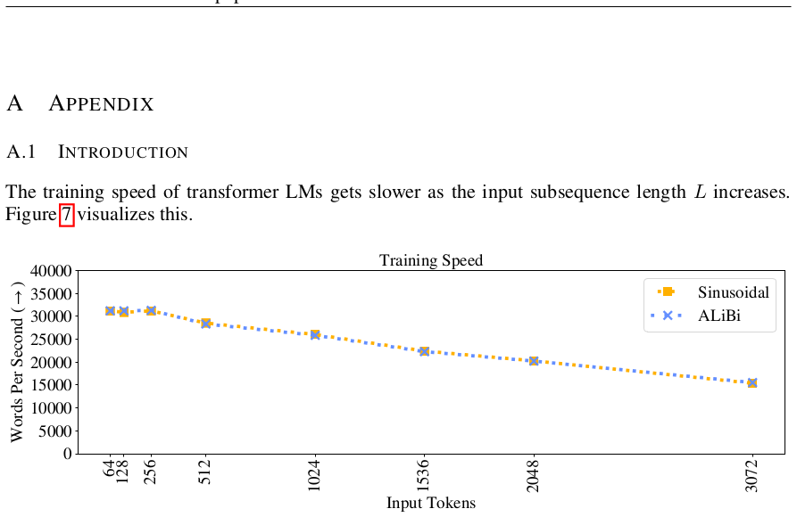
| 位置方法 | 训练长度 | 速度 训练（↑） | 速度 评估（↑） | 内存（↓） |
|---|---|---|---|---|
| 正弦 | 512 | 28.5k | 82.1k | 15.3 GB |
| 1024 | 26.0k | 77.8k | 19.2 GB | |
| 3072 | 15.3k | 42.4k | 15.1 GB | |
| 旋转 | 512 | 20.0k | 43.4k | 17.8 GB |
| 1024 | 17.7k | 39.4k | 22.8 GB | |
| 3072 | 11.5k | 29.5k | 17.8 GB | |
| T5 bias | 512 | 14.4k | 21.8k | 16.9 GB |
| 1024 | 13.0k | 20.2k | 20.9 GB | |
| 3072 | 4.3k | 4.9k | 15.9 GB | |
| ALiBi | 512 | 28.3k | 85.8k | 15.3 GB |
| 1024 | 25.8k | 76.4k | 19.3 GB | |
| 3072 | 15.5k | 42.2k | 15.2 GB |
表 2、3、4 显示使用正弦、旋转、T5 bias 和 ALiBi 位置方法的模型在外推到比训练更长序列时的困惑度和运行时间。这些表中模型分别在 \(L=512,1024,3072\) 词元上训练。由于原表数据庞大，以下仅保留表 2 的节选，完整数据请参见原论文附录。
| 输入长度 | 正弦 PPL | 旋转 PPL | T5 bias PPL | ALiBi PPL |
|---|---|---|---|---|
| 512 | 20.05 | 20.07 | 19.65 | 19.73 |
| 1024 | 19.98 | 20.01 | 19.57 | 19.62 |
| 1536 | 19.93 | 20.02 | 19.57 | 19.64 |
| 2048 | 19.91 | 19.98 | 19.53 | 19.61 |
| 3072 | 19.91 | 19.94 | 19.47 | 19.57 |
| 4096 | 19.91 | 19.93 | 19.47 | 19.54 |
| 5120 | 19.91 | 19.87 | 19.39 | 19.49 |
| 6144 | 19.95 | 19.83 | 19.36 | 19.46 |
| 7168 | 20.13 | 19.88 | 19.41 | 19.48 |
| 8192 | 20.18 | 19.84 | 19.36 | 19.43 |
| 9216 | 20.40 | 19.81 | 19.33 | 19.38 |
| 10240 | 20.59 | 19.81 | 19.27 | 19.38 |
| 11264 | 24.86 | 19.79 | 19.10 | 19.14 |
| 12288 | 30.82 | 20.17 | 18.94 | 18.99 |
| 13312 | 37.42 | 20.73 | 18.86 | 18.88 |
| 14336 | 43.54 | 21.37 | 18.79 | 18.73 |
| 15360 | 50.36 | 22.01 | 18.77 | 18.68 |
图 8 是图 4 的截面，显示不同训练长度的模型和正弦基线，均在 \(L_{valid}=3072\) 词元上评估。我们观察到所有 \(512\le L<3072\) 的模型训练都快于 \(L=3072\) 正弦模型，但在验证集上取得更好困惑度。\(L=3072\) 模型训练速度与正弦模型一样快，但分数好超过一个困惑度点（\(L=3072\) 正弦模型标准差为 0.24）。
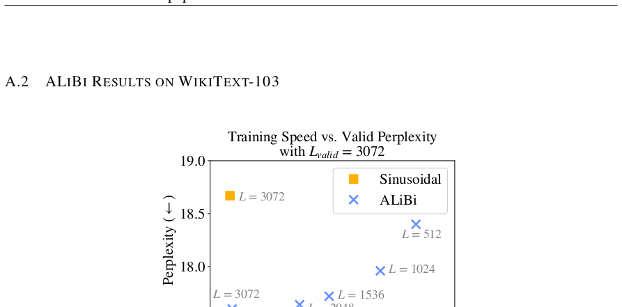
表 5 显示 8 个 ALiBi 模型（训练 \(L\) 从 64 到 3072）外推到更长 \(L_{valid}\) 时的困惑度。还列出正弦、旋转和 T5 bias 模型在 \(L_{valid}=L\) 时的结果。
| 训练长度 | 64 | 128 | 256 | 512 | 1024 | 1536 | 2048 | 3072 |
|---|---|---|---|---|---|---|---|---|
| 64 | 28.46 | 24.70 | 22.88 | 22.09 | 21.73 | 21.63 | 21.59 | 21.53 |
| 128 | — | 23.98 | 21.70 | 20.67 | 20.36 | 20.29 | 20.31 | 20.28 |
| 256 | — | — | 21.29 | 19.89 | 19.29 | 19.13 | 19.10 | 19.03 |
| 512 | — | — | — | 19.73 | 18.81 | 18.50 | 18.48 | 18.40 |
| 1024 | — | — | — | — | 18.66 | 18.20 | 18.05 | 17.96 |
| 1536 | — | — | — | — | — | 18.12 | 17.90 | 17.72 |
| 2048 | — | — | — | — | — | — | 17.91 | 17.64 |
| 3072 | — | — | — | — | — | — | — | 17.60 |
| 正弦* | 28.03 | 23.81 | 21.45 | 20.05 | 19.34 | 19.05 | 18.87 | 18.67 |
| 旋转* | — | — | — | 20.07 | 19.33 | — | — | 18.57 |
| T5 bias* | — | — | — | 19.65 | 18.80 | — | — | 18.01 |
表 6 比较 ALiBi 与正弦、旋转和 T5 bias 基线在 WikiText-103 测试集上的结果，表 7 比较 ALiBi 与该测试集当前最先进模型。
| 模型 | 参数量 ↓ | 训练速度 ↑ | 推理速度 ↑ | Valid ↓ | Test ↓ |
|---|---|---|---|---|---|
| 正弦, L=3072 | 247M | 15.3k | 13.6k | 18.67 | 19.38 |
| 旋转, L=3072 | 247M | 11.5k | 12.2k | 18.57 | 19.28 |
| T5 Bias, L=3072 | 247M | 4.3k | 7.3k | 18.01 | 18.73 |
| ALiBi L=512, Lvalid=3072 | 247M | 28.3k | 13.6k | 18.40 | 19.08 |
| ALiBi L=3072, Lvalid=3072 | 247M | 15.5k | 13.6k | 17.60 | 18.30 |
| 模型 | 参数量 ↓ | Valid ↓ | Test ↓ |
|---|---|---|---|
| Adaptive Inputs (Baevski & Auli, 2018) | 247M | 17.97 | 18.70 |
| Transformer-XL (Dai et al., 2019) | 257M | — | 18.3 |
| Shortformer (Press et al., 2021) | 247M | 17.47 | 18.15 |
| Sandwich Transformer (Press et al., 2020) | 247M | — | 17.96 |
| Staged Training (Press et al., 2021) | 247M | — | 17.56 |
| Compressive Transformer (Rae et al., 2020) | 329M | — | 17.1 |
| Routing Transformer (Roy et al., 2020) | — | — | 15.8 |
| kNN-LM (Khandelwal et al., 2020) | 247M | 15.81 | 15.79 |
| 正弦, L=3072 | 247M | 17.95 | 18.67 |
| 旋转, L=3072 | 247M | 17.98 | 18.72 |
| T5 Bias, L=3072 | 247M | 17.37 | 18.12 |
| ALiBi L=512, Lvalid=3072 | 247M | 18.30 | 19.01 |
| ALiBi L=3072, Lvalid=3072 | 247M | 16.97 | 17.66 |
为确保结果不特定于 WikiText-103，我们在不同领域应用模型和基线，同时使用类似模型架构和与上一小节相同的 ALiBi 斜率。我们强调斜率集是在 WikiText-103 上实验选出的，这里将其应用于在非常不同文本领域训练的模型。开发该方法过程中，我们仅在该领域使用先前选定的斜率运行了一组实验。
具体地，我们使用 Toronto BooksCorpus（Zhu et al., 2015），它曾用于训练 BERT（Devlin et al., 2019）（与英文维基百科一起）。语料约 700M 词元（2.9 GB）。我们使用与 Khandelwal 等（2020）相同的训练/验证/测试划分和分词，使用 BERT 的 29K 字节对编码词表。由于词表远小于 WikiText-103，我们将 Baevski & Auli（2018）的自适应词嵌入和 softmax 替换为绑定的词嵌入和 softmax 矩阵（Press & Wolf, 2017; Inan et al., 2017）。
图 9（和表 8）复现了 WikiText-103 上的成功。在相同输入词元数 \(L\) 训练时，模型超过正弦基线；此外，模型能在推理时外推到更长序列。即使斜率集未在该数据集上调优，这也成立。该结果确立了 ALiBi 及所发现斜率集的通用性，表明它们可用于不同文本领域而无需进一步超参数调优。
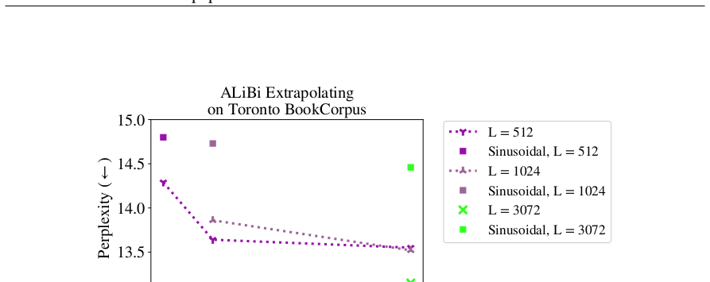
| 训练长度 | 512 | 1024 | 3072 |
|---|---|---|---|
| 512 | 14.29 | 13.64 | 13.55 |
| 1024 | — | 13.86 | 13.52 |
| 3072 | — | — | 13.15 |
| 正弦* | 14.80 | 14.73 | 14.46 |
| 模型 | 参数量 ↓ | Valid ↓ | Test ↓ |
|---|---|---|---|
| 正弦, L=3072 | 247M | 14.46 | 11.67 |
| Ltrain=512, Lvalid=3072 | 247M | 13.55 | 10.98 |
| Ltrain=3072, Lvalid=3072 | 247M | 13.15 | 10.73 |
| 模型 | 参数量 ↓ | Valid ↓ | Test ↓ |
|---|---|---|---|
| kNN-LM (Khandelwal et al., 2020) | 247M | 14.20 | 10.89 |
| Shortformer (Press et al., 2021) | 247M | 13.40 | 10.88 |
| Sandwich (Press et al., 2020) | 247M | — | 10.83 |
| Staged Training (Press et al., 2021) | 247M | 12.80 | 10.48 |
| 正弦, L=3072 | 247M | 14.06 | 11.40 |
| ALiBi L=512, Lvalid=3072 | 247M | 13.76 | 11.11 |
| ALiBi L=3072, Lvalid=3072 | 247M | 12.70 | 10.40 |
表 11 比较我们的 13 亿参数 ALiBi 模型外推到两倍训练词元数时的结果。我们使用正弦模型作为基线，并训练与所比较 ALiBi 模型相同的时间（因此，由于 ALiBi 在此设置中运行更快，正弦模型完成更少更新）。
| 内存 ↓ | 更新数 | 小时 ↓ | Valid PPL Lvalid=1024 | Valid PPL Lvalid=2048 | |
|---|---|---|---|---|---|
| 正弦, Ltrain=1024 | 26.2 GB | 46.7k | 5.5k | 9.24 | — |
| ALiBi, Ltrain=512 | 24.6 GB | 50.0k | 5.5k | 9.30 | — |
| 正弦, Ltrain=2048 | 29.3 GB | 44.2k | 5.9k | — | 9.01 |
| ALiBi, Ltrain=1024 | 26.2 GB | 50.0k | 5.9k | — | 8.92 |
| 内存 ↓ | 更新数 | 小时 ↓ | Valid PPL Lvalid=512 | Valid PPL Lvalid=1024 | Valid PPL Lvalid=2048 | |
|---|---|---|---|---|---|---|
| 正弦, Ltrain=512 | 24.6 GB | 50.0k | 5.5k | 9.71 | 37.05 | 105.42 |
| ALiBi, Ltrain=512 | 24.6 GB | 50.0k | 5.5k | 9.79 | 9.30 | 9.54 |
| 正弦, Ltrain=1024 | 26.2 GB | 50.0k | 5.9k | — | 9.15 | 48.85 |
| ALiBi, Ltrain=1024 | 26.2 GB | 50.0k | 5.9k | — | 9.16 | 8.92 |
| 正弦, Ltrain=2048 | 29.3 GB | 50.0k | 6.7k | — | — | 8.83 |
| ALiBi, Ltrain=2048 | 29.4 GB | 50.0k | 6.7k | — | — | 8.84 |
本节研究 ALiBi 为何如此有效。我们发现，ALiBi 在给定更长序列时困惑度下降，很大程度上可由其更好地避免早期词元诅咒来解释。我们假设未来基于 ALiBi 的工作可能通过更有效利用更长历史获得进一步收益。
滑动窗口推理：如第 2 节所述，非重叠推理常用于评估长于 \(L\)（每个训练子序列词元数）的序列。替代方案是评估时使用滑动窗口（Baevski & Auli, 2018）。
选择 1 到 \(L-1\) 之间的步长 \(S\)，每次前向传播后窗口前进 \(S\) 个词元。12 这意味着前一子序列的 \(L-S\) 个词元被重新编码，只输出 \(S\) 个新词元。优点是第一个子序列之后每个子序列的所有输出至少有 \(L-S\) 个先前词元作为条件。然而，由于词元必须多次重新编码，该方法比非重叠方法慢得多。当 \(S=1\) 时，每次推理传递输出一个词元，每次都使用模型可处理的最大上下文窗口；但这是最慢的方法。图 10 可视化非重叠和滑动窗口评估方法。
我们使用滑动窗口推理作为分析工具，但注意它在实践中通常慢得不可行（Press et al., 2021）。
早期词元诅咒：将评估集切分为子序列意味着每个子序列早期预测无法访问许多先前上下文词元（出现在前一子序列末尾）。结果称为早期词元诅咒（Press et al., 2021），会提高（恶化）困惑度分数。一种变通方法是使用滑动窗口评估模型，给每个预测更多上下文。该方案慢，因为需要更多模型前向传递。
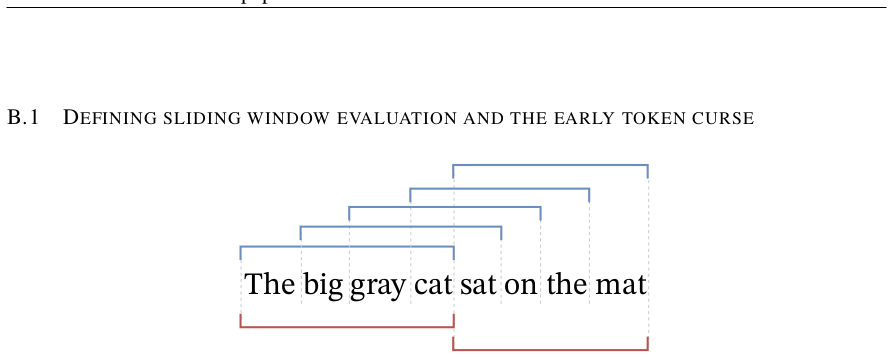
我们展示了 ALiBi 方法（以及较小程度上的 T5 bias）允许 LM 在推理时外推。有两个原因可解释这些方法为何能在更长输入子序列上取得更好困惑度：
为更好理解可能发生的情况，我们用 ALiBi 模型和 \(L=512,1024,3072\) 正弦基线重新评估 WikiText-103 开发集。但这次使用步长 \(S=1\) 的滑动窗口评估，即每次推理传递后只移动一个词元，给每个预测模型可用的最大上下文词元数。
结果见图 11 及对应表 13（正弦）和表 15（ALiBi）。
不出所料，对于正弦模型，如第 2 节，即使使用滑动窗口评估，增加 \(L_{valid}\) 也会导致困惑度爆炸。我们的 ALiBi 模型在此设置中无法在查看更长序列时改善困惑度，但当 \(L_{valid}\) 增加时困惑度保持平坦。
这使我们相信，在使用非重叠评估增加 \(L_{valid}\) 时困惑度改善是由解释 2 而非解释 1 造成的。因为滑动窗口评估为每个预测提供长上下文窗口，它遏制了早期词元诅咒。在此设置中，ALiBi 性能在 \(L_{valid}\) 增加时保持平坦，使我们假设第 4 节中增加 \(L_{valid}\) 所见的收益是更大 \(L_{valid}\) 值缓解早期词元诅咒的结果。
我们的 ALiBi 结果与使用 T5 bias 的模型一致：使用滑动窗口评估时，评估更长序列困惑度相对平坦（见表 14）。
分析表明，当 \(L_{valid}>L\) 时，ALiBi 可能并未使用比训练更长上下文。这突出未来工作可追求的研究方向。
这些发现不降低 ALiBi 的价值。当 \(L_{valid}=L\) 时，ALiBi 取得优于或相似于正弦方法和其他替代方案的结果，尽管它更简单且不需要学习参数。当评估 \(L_{valid}>L\) 词元时，即使 ALiBi 不关注超过 \(L\) 的词元，它也优于其他可用于此情况的替代方案，即标准非重叠推理（便宜但性能较差）和更准确的滑动窗口方法（非常慢）。
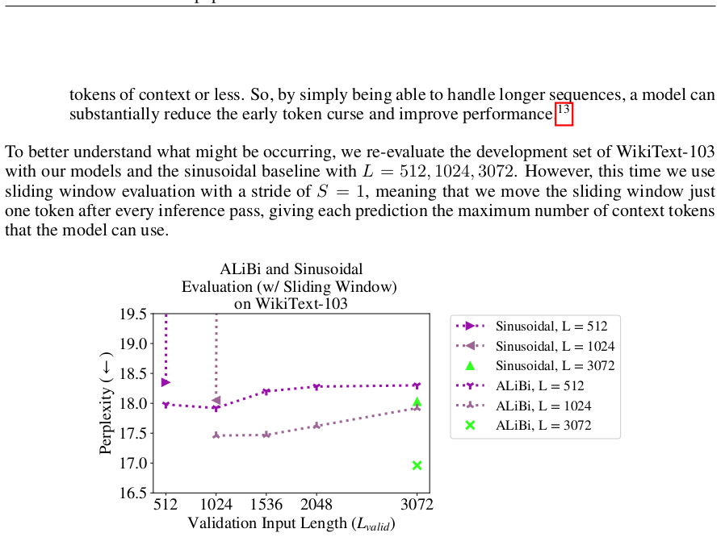
| 训练长度 | 512 | 1024 | 1536 | 2048 | 3072 |
|---|---|---|---|---|---|
| 512 | 18.35 | 204.42 | 264.74 | 306.19 | 360.12 |
| 1024 | — | 18.05 | 206.55 | 302.63 | 393.71 |
| 3072 | — | — | — | — | 18.03 |
| 训练长度 | 512 | 1024 | 1536 | 2048 | 3072 |
|---|---|---|---|---|---|
| 512 | 17.92 | 18.51 | 20.36 | 22.62 | 30.77 |
| 1024 | — | 17.65 | 17.87 | 18.51 | 20.66 |
| 3072 | — | — | — | — | 17.41 |
| 训练长度 | 512 | 1024 | 1536 | 2048 | 3072 |
|---|---|---|---|---|---|
| 512 | 17.98 | 17.92 | 18.2 | 18.28 | 18.3 |
| 1024 | — | 17.46 | 17.47 | 17.62 | 17.92 |
| 3072 | — | — | — | — | 16.96 |
说明：本文档为所提供 PDF 内容的中文翻译版；参考文献保留英文原样。原文图已按英文本裁切嵌入。原文表格 OCR 存在错位或数据缺失，已按可读内容整理；附录大表仅保留节选并注明完整数据见原文。公式编号按原文保留。